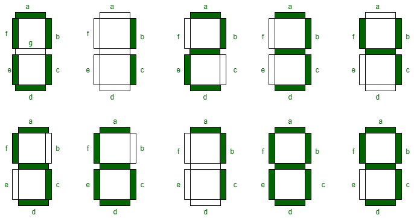
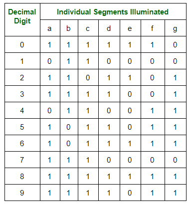
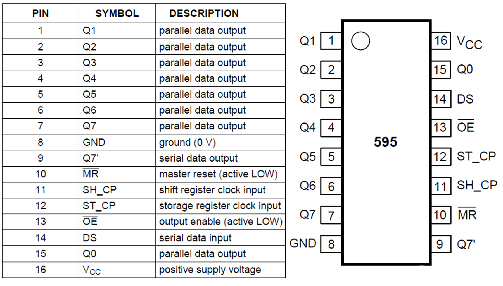

Low Level Programming of ATMega328p Microcontroller
The ATMega328p microcontroller is the brains of the famous arduino boards. The simplicity of using the Arduino IDE to program a board is a major contributor to its popularity. The built in functions allow one to program fairly complex projects with ease. Behind the scenes, these built in functions must interface directly with the microcontroller unit (MCU).
Microcontroller Architecture
THe distinction between a Microcontroller and a Microprocessor is subtle but important. A microprocessor contains the Arithmetic and Logic Unit (ALU), the control unit and required registers. A microcontroller contains a microprocessor plus the corresponding IO ports, RAM and ROM, counters and timers.
For the first project in the graduate Mechatronics course that I took, we were tasked with making a time-accurate stopwatch using an arduino microcontroller board without the use of any Arduino IDE built in functions. Thus, it was required to directly interface with the registers on the ATMega328p.
Hardware
The hardware for this project is fairly simple and consists of an Arduino Nano and a 4-digit, 7-segment display. The 7-segment display requires a sequence of 1's and 0's corresponding to different segments which produce a different number on the display. The different numbers are shown in the figure below.
Then, a so called 'truth table' can be derived which has a 1 or a 0 for each segment in order to produce the desired number shape. This truth table is shown below.
To control a 4 digit display, it seems at first glance that we require 7 control lines for each digit. This would mean we need 28 individual control lines coming from the Arduino. This is simply not possible! Fortunately, the 4-digit, 7-segment display is configured in such a way that we can use only 7 control lines for determining the number and 4 control lines for determining which digit is turned on. If we turn on each digit conseutively at a high enough frequency, a phenomenon known as persistence of vision tricks us into thinking the digits are all lit up at the same time.
From above, we could use the 11 control lines for the 4 digit display. However, this only leaves 2 space digital IO ports on the Arduino. If the project required more IO ports for some other peripheral, we would be out of luck. So, for this project, I decided to make use of two 8-bit shift registers in order to reduce the number of IO ports used on the Arduino for controlling the 4 digit display. The shift registers store binary values within their D flip-flop internal logic circuitry. For this application, the shift register is acting as a serial to parallel convertor.
For this project, the 74HC595 Shift Register was utilized. The figure below shows the pins and their description. To utilize this chip as a serial to parallel convertor, only 3 connections to the arduino are required: Serial data, clock and latch.
Along with the two shift registers and the display, a button was required in order to stop and start the stopwatch. For the cheap button used in this project, mechanical bouncing was a large issue. Bouncing occurs because the mechanical contacts of the button can vibrate and bounce. This potentially leads to multiple 'pushes' of the button when it was only intended to be pushed once. Sometimes, software can be used to debounce the button. I decided to use a hardware debouncing circuit inspired by one of my favorite youtuber's videos on debouncing, Ben Eater. The circuit utilizes the famous 555 chip with a resistor and capacitor on the inputs of the 555's comparators. Simply put, when the button is connected through the 555 debouncing circuit, only a single pulse will be input into the arduino regardless of any bouncing from the mechanical contacts of the button. I highly recommend watching the Ben Eater video linked above for more details!
THe figure below shows the final wiring of the stopwatch consisting of an arduino nano, two 74HC595 shift registers, a 555 timer, button and 4-digit, 7-segment display. The wiring was done on a breadboard and I made it nice and neat which took more time than I expected.

Software
After the hardware is wired and connected, the software is needed to produce a time-accurate stopwatch. The primary softare mechanism utilized is an interrupt. When the interrupt is triggered, a subroutine can be run, known as an Interrupt SubRoutine (ISR). In this case, a hardware timer on the MCU is setup which triggers an interrupt at the desired frequency. For this project, that desired frequency is 100 Hz so that the time keeps track of the time to the hundreths place after the decimal.
The code snippet below shows how to setup the 16-bit timer on the ATMega328p. The prescaler is required in order to reduce the number of clock ticks that we use since the timer is based on the pulses of the clock.
void setup()
{
// stop interrupts
cli();
// Reset the control register
// Reset entire TCCR1A to 0
//Reset entire TCCR1B to 0
TCCR1A = 0;
TCCR1B = 0;
//Set CS12 to 1 to use prescalar of 256
TCCR1B |= 0b00000100;
// Set OCIE1A to 1 to enable compare match A register
TIMSK1 |= 0b00000010;
// frequency of timer in Hz
timerFreq = 100;
//set compare register A to proper value based on timer frequency and prescaler
OCR1A = (16e6 / (256 * timerFreq)) + 1;
//setup latchPin, dataPin, clockPin as output in Data Direction Register for Port B (DDRB)
DDRB = DDRB | 0b00011010;
// setup button pin as input
DDRD = DDRD & 0b11111101;
// Setup interrupt button
//Enable Pin change interrupt for port D
PCICR |= 0b00000100;
// using pin D2 as interrupt pin
PCMSK2 |= 0b00000100;
// Initialize variables
timeCount = 0;
start = false;
disp = false;
sei();
// display all zeros on startup
displayAll(zero, zero, zero, zero);
}
When the timer reaches the value set in the output compare register, OCR1A, an interrupt will be triggered. In code, this runs the ISR associated with the timer1_compa_vect. The entire stopwatch operates soley on interrupts. Thus, the loop() function contains no code. Each time the timer triggers the interrupt, 1/100 of a second has passed. Then, the code in the ISR will update the value written on the 4-digit display. The code snippet below shows how this is implemented including the ISR for the button which can be used to start and stop the stopwatch.
void loop() {
}
ISR(PCINT2_vect)
{
if (PIND >> 2 & 0b00000100 >> 2)
{
disp = !disp;
start = true;
}
}
ISR(TIMER1_COMPA_vect)
{
// reset timer
TCNT1 = 0;
if (disp && start)
{
timeCount += 1;
displayTime(timeCount);
}
else
{
displayTime(timeCount);
}
}
In this code above, the variable timeCount keeps track of how many hundreths of a second have elapsed and that value is passed to the displayTime() function. This function determines which value to write for which digit and then which sequence of 1's and 0's is required for drawing that digit. This function is shown below. The sequence() function takes in a digit between 0 and 9 and determines the sequence of 1's and 0's that need to be sent to the shift registers and then the 4-digit 7-segment display. The shiftOutSam() function sends the sequence of 1's and 0's out on the serial data port.
void displayTime(int timeCount)
{
// determine the number for each digit based on the number of hundreths of a second have passed
d1v = timeCount % 10;
d2v = (timeCount / 10) % 10;
d3v = (timeCount / 100) % 10;
d4v = (timeCount / 1000) % 10;
d1 = sequence(d1v);
d2 = sequence(d2v);
d3 = sequence(d3v);
d4 = sequence(d4v);
// logic or the value for d3 with a 1 in the MSB to turn on the decimal point
d3 |= 0b10000000;
// Pull latch low
PORTB &= 0b11110111;
// shift out binary literal of which digits to activate
shiftOutSam(dataPin, clockPin, D4);
// shift out binary literal of which LED's to activate
shiftOutSam(dataPin, clockPin, d4);
// pull latch high
PORTB |= 0b00001000;
delay(3);
PORTB &= 0b11110111;
shiftOutSam(dataPin, clockPin, D3);
shiftOutSam(dataPin, clockPin, d3);
PORTB |= 0b00001000;
delay(3);
PORTB &= 0b11110111;
shiftOutSam(dataPin, clockPin, D2);
shiftOutSam(dataPin, clockPin, d2);
PORTB |= 0b00001000;
delay(3);
PORTB &= 0b11110111;
shiftOutSam(dataPin, clockPin, D1);
shiftOutSam(dataPin, clockPin, d1);
PORTB |= 0b00001000;
//delay(2);
}
byte sequence(int value)
{
switch (value)
{
case 1: return 0b00110000; break;
case 2: return 0b01101101; break;
case 3: return 0b01111001; break;
case 4: return 0b00110011; break;
case 5: return 0b01011011; break;
case 6: return 0b01011111; break;
case 7: return 0b01110000; break;
case 8: return 0b01111111; break;
case 9: return 0b01111011; break;
default: return 0b01111110; break;
}
}
void shiftOutSam(uint8_t dataPin, uint8_t clockPin, uint8_t val)
{
// takes in 8 bit binary literal and sends it out in serial fashion on data pin, timed by pulsing clockpin
uint8_t i = 0;
for (i = 0; i < 8; i++)
{
uint8_t temp;
temp = !!(val & (1 << i));
if (temp == 0)
{
PORTB &= 0b11101111;
}
else
{
PORTB |= 0b00010000;
}
// cycle clock pin high and low
PORTB |= 0b00000010;
PORTB &= 0b11111101;
}
}
The displayTime() function takes in the timeCount variable containing the number of hundreths of seconds to display, determines the sequence of 1's and 0's for each digit and sends the data out on the serial data port. As mentioned above, this stopwatch display utilizes the persistence of vision phenomenon that we experience. It seems like the digits are updated at the same exact time but this is not possible with the hardware setup that I chose. Instead, the values are updated conseutively at a high enough frequency that it seems like they are all updated at the same time. This is prevelant in the displayTime() function as there is a slight delay() after each shiftOut of the data.
Conclusion
In this project, I learned about the timer and compare registers on the ATMega328p microcontroller and how to program them by directly setting the bits in the register. Check out the other projects in this category for how to use the ADC registers, how to make a PWM signal for a servo motor and more!